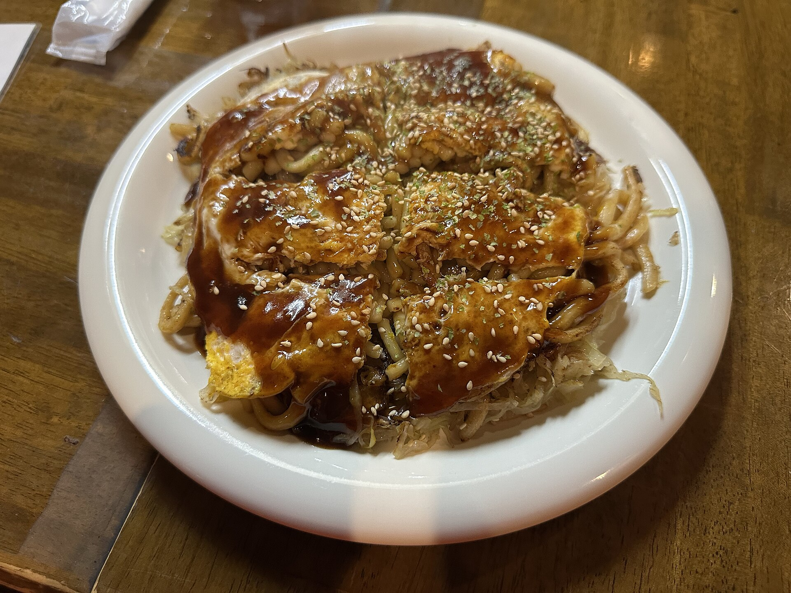

01
重ねるだけじゃない構造
薄い生地、山盛りのキャベツ、麺をひとつずつ丁寧に重ねるため、食べごたえと香ばしさが引き立ちます。
瀬戸内・広島のご当地グルメ
最終更新：2026 年 11 月 18 日
麺とキャベツを重ねて焼く、広島ならではの一枚。鉄板越しに生まれる香ばしさと、 店ごとの個性を楽しめる広島のソウルフードを紹介します。

薄い生地、山盛りのキャベツ、麺をひとつずつ丁寧に重ねるため、食べごたえと香ばしさが引き立ちます。
店によってソースや麺、具材の組み合わせが異なります。焼き上げる音や香りも料理体験の一部です。
お店ごとのキャベツの甘み、麺の種類、ソースの濃さに個性があります。一枚ずつ味の違いを比べてみましょう。
広島観光やグルメ情報を確認できます。